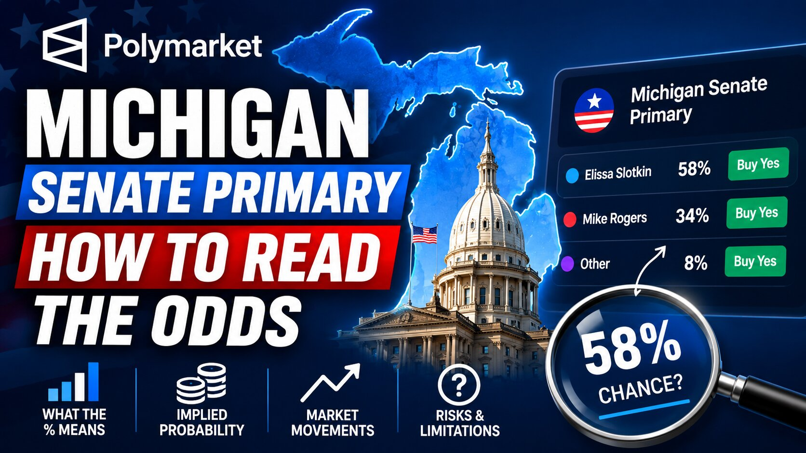

Michigan Senate Primary on Polymarket: How to Read the Odds

The short answer
Michigan's primary was held on August 4, 2026, and it's the rare case where Polymarket's headline number actually undersold how interesting the race turned out to be. On the Republican side, Mike Rogers cleared his primary about as easily as a market can price a race — Polymarket's primaries dashboard had him at 100% against token opposition. On the Democratic side, Polymarket had progressive Wayne County health official Abdul El-Sayed priced around 98% to beat Rep. Haley Stevens going into election night. He did win — but the count came in tighter than either the market or the pre-election polling suggested, and that gap is the real story of this race.
The Democratic primary: from double-digit polls to a photo finish
Before the polls closed, the setup looked lopsided. Polymarket's Democratic primary winner market had El-Sayed at roughly 97.8-98%, with nearly $1.9 million traded on the contract. An Emerson College poll from July 30 had shown him leading Stevens 54% to 39% among likely primary voters, a gap that widened to 57-41% once undecided leaners were allocated. County-level Polymarket contracts told the same story, pricing El-Sayed at 85-98% to carry Wayne County, Detroit, and Washtenaw County (Ann Arbor). His position strengthened further in early July when state Sen. Mallory McMorrow dropped out of the race, consolidating progressive support behind him, and he picked up endorsements from Bernie Sanders, AOC, and former Congressman Andy Levin along the way. Stevens, by contrast, ran on her legislative record with backing from retiring incumbent Gary Peters and Attorney General Dana Nessel, along with heavy outside spending tied to AIPAC-affiliated groups.
Then the actual votes came in noticeably closer than any of that suggested. With roughly 80% of the expected vote counted early on primary night, El-Sayed's lead over Stevens had narrowed to only a few points — a sharp contrast with the double-digit gap pre-election polling had shown. The market didn't get the winner wrong, but the size of the win caught traders off guard, which is exactly the kind of gap a margin-of-victory contract exists to price.
The Republican primary: no drama at all
There was essentially no equivalent story on the Republican side. Polymarket's Republican primary winner market had Mike Rogers at 98% in the run-up to the vote, with Fred Heurtebise and Kent Benham splitting token remaining odds, and results-night pricing moved him to 100%. Rogers, a former U.S. Representative making his second consecutive run at this seat after losing to Elissa Slotkin by roughly a third of a percentage point in 2024, entered this cycle with far more name recognition and institutional support than either of his primary opponents — which is exactly why the market barely moved on his side of the race all cycle.
Margin of victory: the market that actually mattered
Because the "who wins" question was never seriously in doubt, the more useful Polymarket contract for the Democratic primary was always the margin-of-victory market, which had traded roughly $185,000 as of the morning after the primary. As partial results came in tighter than expected, the leading outcome flipped to "El-Sayed wins by under 5 points" at around 91%, up from where traders had positioned before polls closed. That's the clearest illustration of why these secondary markets exist: on a primary where the winner was never really in question, the margin contract is where the actual news of election night showed up in the pricing.
The general election: a real swing-state toss-up
Zoom out to November, and Polymarket treats this race very differently than the primary. The Michigan Senate election winner market has priced the Democratic nominee's odds of holding the open seat somewhere in the high-50s to mid-60s in percentage terms, depending on the day, against Rogers in the mid-30s — a considerably tighter spread than either primary saw. That's consistent with Michigan's status as a genuine presidential swing state, and with Rogers' near-miss in the same race just two years earlier. Gary Peters is retiring rather than seeking reelection, which removes an incumbency advantage Democrats would otherwise have carried into the fall, and traders are watching fundraising, turnout among key voting blocs, and the broader midterm environment as the factors most likely to move this number between now and November.
The four ways to trade this race
Polymarket runs this race as a family of related markets rather than one single contract:
Democratic primary winner and Republican primary winner — separate nomination markets for each party, tracking who wins the right to appear on the November ballot.
Primary margin of victory — a contract on how large the winning margin will be, which is where election-night surprises actually get priced when the winner itself isn't in doubt.
Michigan Senate election winner — the full general-election market, spanning both parties, resolving in November.
General election margin of victory — the equivalent margin contract for November, treating the race as a genuine toss-up rather than a blowout.
There are also county-level contracts — Wayne, Washtenaw, and others — that let traders bet on how individual regions break, which is useful for anyone trying to price the state's electoral math region by region rather than as one statewide number.
Why one race needs this many markets
Splitting the race this way lets traders isolate the specific question they have a view on. A trader confident El-Sayed would win the primary but genuinely unsure by how much could trade the margin contract without needing a strong opinion on November — which is exactly the group that made money on primary night, since the "winner" market barely moved while the margin market repriced hard. The same logic carries into the general election: someone with a view on Michigan's overall partisan lean doesn't need to also take a position on the primary margin, and vice versa. Multiplying a candidate's nomination odds by their party's general-election odds should roughly reproduce what a single "who becomes senator" market would show — a useful sanity check whenever the numbers across contracts seem to drift out of line with each other.
What to watch next
With both nominations effectively decided, the general-election and margin-of-victory markets are where the real trading action moves next. Watch for how the final certified primary margin compares to primary-night estimates, since a materially closer-than-expected Democratic win could feed directly into how competitive traders expect the general election to be. Beyond that, fall advertising spending, any shifts in the national midterm environment, and Rogers' ability to consolidate the same coalition that came within a third of a point of winning in 2024 are the factors most likely to move Polymarket's Michigan numbers between now and November 3.
FAQ
What did Polymarket have Michigan's Senate primary at?
Going into the August 4, 2026 primary, Polymarket priced Abdul El-Sayed at roughly 97.8-98% to win the Democratic nomination over Rep. Haley Stevens, and Mike Rogers close to 98-100% to win the Republican nomination.
Did the Michigan Democratic primary go as expected?
Not exactly. Pre-election polling and Polymarket both pointed to a comfortable El-Sayed win, but partial results on primary night showed a much tighter margin, and the margin-of-victory market shifted toward pricing a sub-5-point win as the most likely outcome.
Who does Polymarket favor to win Michigan's Senate seat in November?
The Democratic nominee has been favored on Polymarket's general-election market, with odds that have moved roughly between 59% and 66% depending on the day, against Mike Rogers in the 34-37% range — a genuine swing-state spread rather than a lock.
What is a margin-of-victory market on Polymarket?
It's a contract on how large a candidate's win will be, with multiple point-range outcomes, instead of a single win/loss bet. It's often more informative than the winner market once a race is no longer close on "who wins."
Is Polymarket legal and does it require real money?
Polymarket is a crypto-based prediction market platform that serves non-US users and involves real-money trading.
Disclaimer: This post is for informational purposes only and is not financial or trading advice. Odds shown reflect prices at the time of writing and change continuously as new information emerges — always check live prices at polymarket.com before trading.